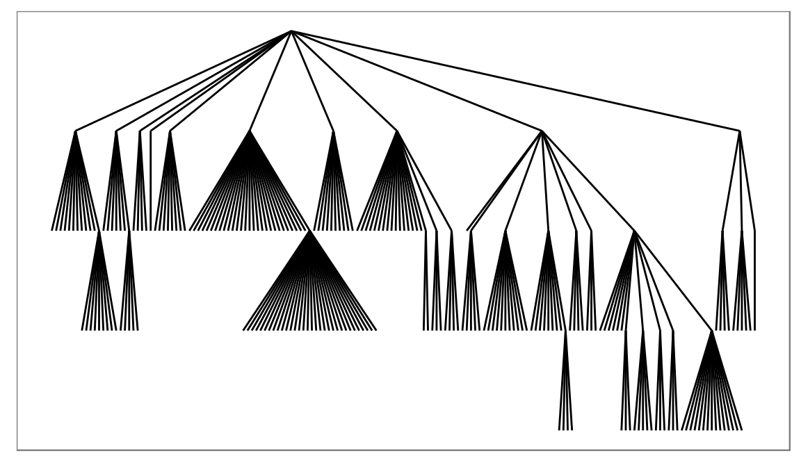
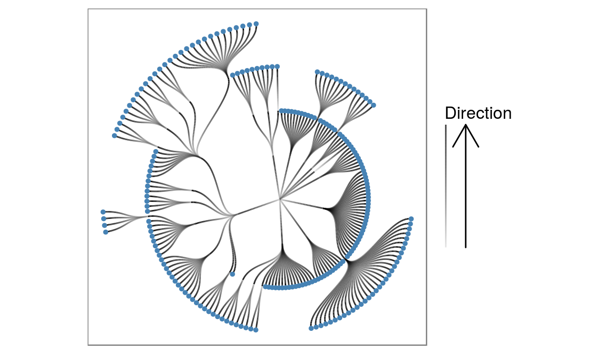
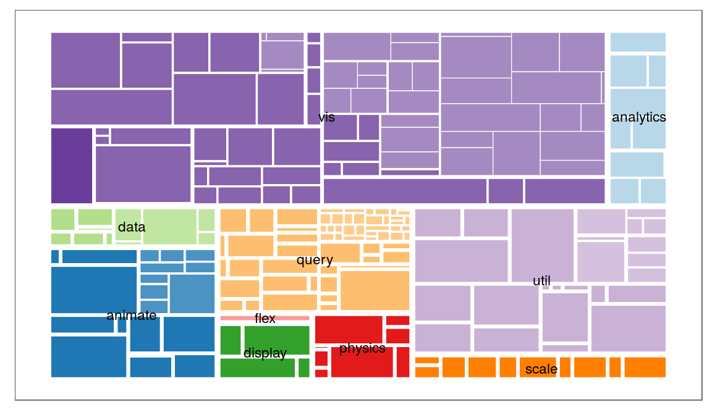
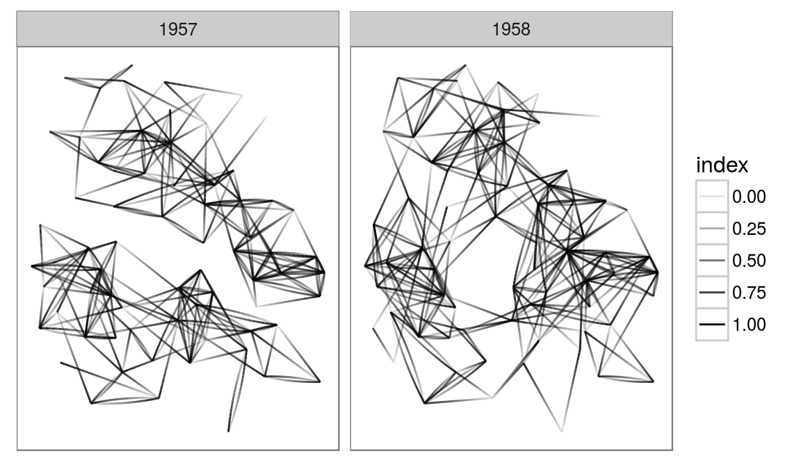

ggiraph
Make ggplot interactive
ggstance
Horizontal versions of ggplot2 geoms
ggalt
Extra coordinate systems, geoms & stats
ggforce
Accelarating ggplot2
ggrepel
Repel overlapping text labels
ggraph
Plot graph-like data structures
ggpmisc
Miscellaneous extensions to ggplot2
geomnet
Network visualizations in ggplot2
ggExtra
Marginal density plots or histograms
gganimate
Create easy animations with ggplot2
plotROC
Interactive ROC plots
ggthemes
ggplot themes and scales
ggspectra
Extensions for radiation spectra
ggnetwork
Geoms to plot networks with ggplot2
ggraph
https://github.com/thomasp85/ggraph
ggraph extends the grammar of graphics provided by ggplot2 to cover graph and network data. This type of data consists of nodes and edges and are not optimally stored in a single data.frame, as expected by ggplot2. Furthermore the spatial position of nodes (end thereby edges) are more often defined by the graph structure through a layout function, rather than mapped to specific parameters. ggraph handles all of these issues in an extensible way that lets the user gradually build up their graph visualization with different layers as expected from ggplot2, without needing to worry too much about how positions and other metrics are derived.
While node-edge diagrams are the visualization people often relate to graph visualizations it is by far the only one, and ggraph have, or will have support for all types of common and uncommon visualization types.
A simple example
library(ggraph)
library(igraph)
# To show a simple example of the API we consider a hierarchy
## Create a graph of the flare class hierarchy
flareGraph <- graph_from_data_frame(flare$edges, vertices = flare$vertices)
ggraph(flareGraph, 'igraph', algorithm = 'tree') +
geom_edge_link() +
ggforce::theme_no_axes()
Here we use the reingold-tilford algorithm to position the nodes in a hierarchy and draw straight edges between them using the geom_edge_link function. There are ample opportunity for modifications though:
ggraph(flareGraph, 'igraph', algorithm = 'tree', circular = TRUE) +
geom_edge_diagonal(aes(alpha = ..index..)) +
coord_fixed() +
scale_edge_alpha('Direction', guide = 'edge_direction') +
geom_node_point(aes(filter = degree(flareGraph, mode = 'out') == 0),
color = 'steelblue', size = 1) +
ggforce::theme_no_axes()
Here we transform the layout into a circular representation and choose to draw the edges as diagonals instead of straight lines using geom_edge_diagonal. We indicate the direction of the edge by mapping the alpha value to it, and shows this using the edge_direction guide. Lastly we plot the leaf nodes using a filter function.
Other layouts
But what if my data is not hierarchical, you ask. Well ggraph have access to all the layouts implemented in igraph, and then some (more on that later). To show this we take a look at some colonial Americans:
whigsGraph <- graph_from_adjacency_matrix(whigs %*% t(whigs), mode = 'upper',
weighted = TRUE, diag = FALSE)
V(whigsGraph)$degree <- degree(whigsGraph)
ggraph(whigsGraph, 'igraph', algorithm = 'kk') +
geom_edge_link0(aes(width = weight), edge_alpha = 0.1) +
geom_node_point(aes(size = degree), colour = 'forestgreen') +
geom_node_text(aes(label = name, filter = degree > 150), color = 'white',
size = 3) +
ggforce::theme_no_axes()
So it seems Paul Reveres was really in the center of it all (more on this here).
Here we use the kamada kawai layout to lay out the nodes and draw the edges using the geom_edge_link0 (notice the trailing 0 - this is a faster version than the standard but it doesn’t support gradients along the edge). We draw the nodes scaling the size to the degree and lastly we add node labels to the nodes with a degree larger than 150.
What if I don’t like nodes and edges?
Well you could try to make a treemap. Let’s turn to our flare hierarchy again:
# Well add some additional information using the treeApply helpers
flareGraph <- treeApply(flareGraph, function(node, parent, depth, tree) {
tree <- set_vertex_attr(tree, 'depth', node, depth)
if (depth == 1) {
tree <- set_vertex_attr(tree, 'class', node, V(tree)$shortName[node])
} else if (depth > 1) {
tree <- set_vertex_attr(tree, 'class', node, V(tree)$class[parent])
}
tree
})
V(flareGraph)$leaf <- degree(flareGraph, mode = 'out') == 0
ggraph(flareGraph, 'treemap', weight = 'size') +
geom_treemap(aes(fill = class, filter = leaf, alpha = depth), colour = NA) +
geom_treemap(aes(size = depth), fill = NA, colour = 'white') +
geom_node_text(aes(filter = depth == 1, label = shortName), size = 3) +
scale_fill_brewer(type = 'qual', palette = 3, guide = 'none') +
scale_size(range = c(3, 0.2), guide = 'none') +
scale_alpha(range = c(1, 0.6), guide = 'none') +
ggforce::theme_no_axes()
What if I don’t use igraph?
There is also support for dendrogram objects and almost anything else can be converted to either igraph or dendrogram. Let’s look at a dendrogram object:
irisCluster <- hclust(dist(iris[, -5]), method = 'average')
irisCluster <- as.dendrogram(irisCluster)
# treeApply also works for dendrogram
irisCluster <- treeApply(irisCluster, function(node, children, ...) {
if (is.leaf(node)) {
index <- as.integer(attr(node, 'label'))
attr(node, 'nodePar') <- list(species = as.character(iris$Species[index]))
} else {
childSpecies <- sapply(children, function(child) {
attr(child, 'nodePar')$species
})
if (length(unique(childSpecies)) == 1 && !anyNA(childSpecies)) {
attr(node, 'nodePar') <- list(species = childSpecies[1])
} else {
attr(node, 'nodePar') <- list(species = NA)
}
}
node
}, direction = 'up')
ggraph(irisCluster, 'dendrogram', repel = TRUE, ratio = 10) +
geom_edge_elbow2(aes(colour = node.species),
data = gEdges('long', nodePar = 'species')) +
scale_edge_colour_brewer('Species', type = 'qual', na.value = 'black') +
ggforce::theme_no_axes()
Wait, what is that data argument? Most edge geoms comes in three flavors, a standard, a fast (the 0 one) and a slow (the 2 one). So why use the slow? It makes it possible to set interpolate edge aesthetics between the start and end point. Here we tell that colour should be mapped to the species of the nodes, and we tell that the edge data should contain the species parameter from the start and end nodes within the gEdges() call. Now we get a nice gradient from clusters with a common species towards clusters with mixed species.
These are just a couple of examples of what is possible. Due to the layer approach to plotting edges and nodes you have full control over the look of your plot in a very expressive way. As it is a direct extension of ggplot2, it also comes with all the niceties from there, e.g. facetting:
highschoolGraph <- graph_from_data_frame(highschool)
ggraph(highschoolGraph, 'igraph', algorithm = 'kk') +
geom_edge_fan(aes(alpha = ..index..)) +
facet_wrap(~year) +
ggforce::theme_no_axes()